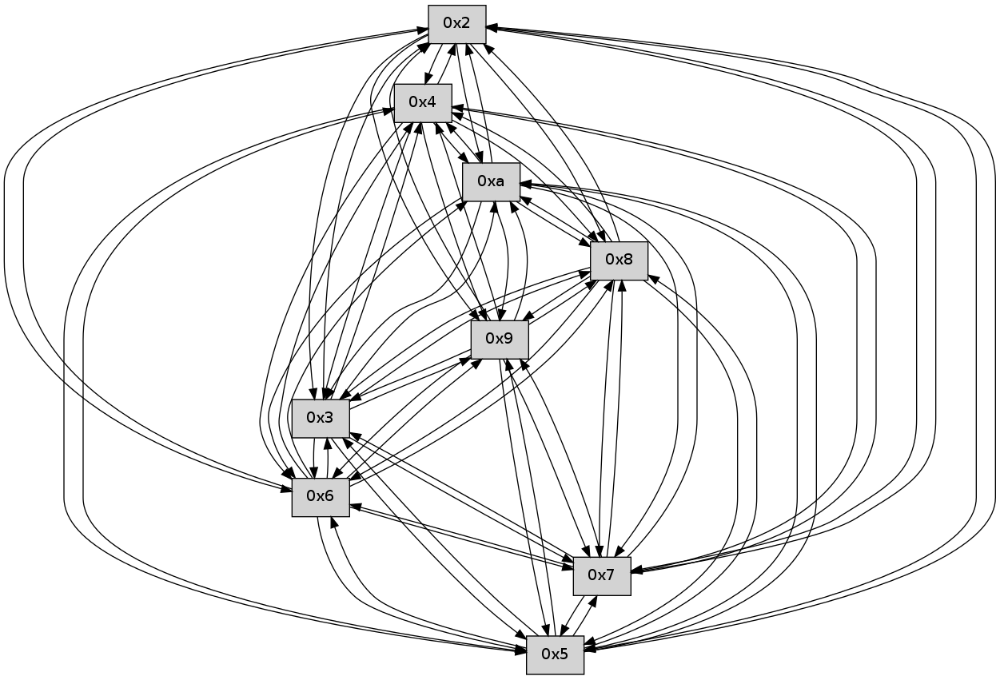

>> << IDX [start] -100 -25 -5 +0 +5 +25 +100 [120.224068165]
 Previous packets
----------------------------------------------------------------------
115.495278 beacon01(faad) #0 coord=01,02,03,04,05,06,07,0a,09,08 cycle=688.0ms assoc
-- color-indic=0 64 af 84
115.505260 beacon02(faad) #0 coord=01,02,03,04,05,06,07,0a,09,08 cycle=688.0ms assoc 64 3c b5
115.515260 beacon03(faad) #0 coord=01,02,03,04,05,06,07,0a,09,08 cycle=688.0ms assoc 64 46 f8
115.525260 beacon04(faad) #0 coord=01,02,03,04,05,06,07,0a,09,08 cycle=688.0ms assoc 64 31 12
115.535262 beacon05(faad) #0 coord=01,02,03,04,05,06,07,0a,09,08 cycle=688.0ms assoc 64 4b 5f
115.545261 beacon06(faad) #0 coord=01,02,03,04,05,06,07,0a,09,08 cycle=688.0ms assoc 64 c5 88
115.555264 beacon07(faad) #0 coord=01,02,03,04,05,06,07,0a,09,08 cycle=688.0ms assoc 64 bf c5
115.565265 beacon0a(faad) #0 coord=01,02,03,04,05,06,07,0a,09,08 cycle=688.0ms assoc 64 ce ce
115.575267 beacon09(faad) #0 coord=01,02,03,04,05,06,07,0a,09,08 cycle=688.0ms assoc 64 40 19
115.585266 beacon08(faad) #0 coord=01,02,03,04,05,06,07,0a,09,08 cycle=688.0ms assoc 64 3a 54
115.597992 [Hello(7): seq=79 sym=2,3,5,6,4,8,9,10 sysInfo= stat=2:11,0,0,0/3:5,0,0,0/5:4,0,0,0/6:12,0,0,0/4:5,0,0,0/8:11,0,0,0/9:13,0,0,0/10:7,0,0,0]
115.600366 [Hello(6): seq=79 sym=2,3,5,4,7,9,8,10 sysInfo= stat=2:4,0,0,0/3:6,0,0,0/5:4,0,0,0/4:5,0,0,0/7:9,0,0,0/9:12,0,0,0/8:10,0,0,0/10:7,0,0,0]
----------------------------------------------------------------------
116.283410 beacon01(faad) #0 coord=01,02,03,04,05,06,07,0a,09,08 cycle=688.0ms assoc
-- color-indic=0 64 13 81
116.293393 beacon02(faad) #0 coord=01,02,03,04,05,06,07,0a,09,08 cycle=688.0ms assoc 64 80 b0
116.303393 beacon03(faad) #0 coord=01,02,03,04,05,06,07,0a,09,08 cycle=688.0ms assoc 64 fa fd
116.313393 beacon04(faad) #0 coord=01,02,03,04,05,06,07,0a,09,08 cycle=688.0ms assoc 64 8d 17
116.323392 beacon05(faad) #0 coord=01,02,03,04,05,06,07,0a,09,08 cycle=688.0ms assoc 64 f7 5a
116.333393 beacon06(faad) #0 coord=01,02,03,04,05,06,07,0a,09,08 cycle=688.0ms assoc 64 79 8d
116.343392 beacon07(faad) #0 coord=01,02,03,04,05,06,07,0a,09,08 cycle=688.0ms assoc 64 03 c0
116.353397 beacon0a(faad) #0 coord=01,02,03,04,05,06,07,0a,09,08 cycle=688.0ms assoc 64 72 cb
116.363398 beacon09(faad) #0 coord=01,02,03,04,05,06,07,0a,09,08 cycle=688.0ms assoc 64 fc 1c
116.373399 beacon08(faad) #0 coord=01,02,03,04,05,06,07,0a,09,08 cycle=688.0ms assoc 64 86 51
116.385189 [Hello(9): seq=22 sym=5,2,3,4,7,6,8,10 sysInfo= stat=5:2,0,0,0/2:1,0,0,0/3:13,0,0,0/4:3,0,0,0/7:10,0,0,0/6:11,0,0,0/8:9,0,0,0/10:3,0,0,0]
116.388842 PARSE ERROR************************
Traceback (most recent call last):
File "PacketAnalysis.py", line 167, in showOperaPacket
structPacket = OperaPacketParse.parsePacket(rawPacket)
File "../../pkg-python/HipSens/Core/OperaPacketParse.py", line 461, in parsePacket
return parseHelloMessage(data)
File "../../pkg-python/HipSens/Core/OperaPacketParse.py", line 127, in parseHelloMessage
assert struct.calcsize("H")*len(neighAddrList) == len(linkList)
AssertionError
48 30 08 00 00 16 00 02 02 10 05 00 02 00 03 00 04 00 07 00 06 00 09 00 0a 00 53 04 00 00 00 00 4c 10 00 0f 00 01 00 00 00 01 00 0c 00 0e 00 09 00 03 4c 06
116.392596 [Hello(10): seq=11 sym=6,3,2,5,9,8,7,4 sysInfo= stat=6:7,0,0,0/3:8,0,0,0/2:7,0,0,0/5:7,0,0,0/9:6,0,0,0/8:5,0,0,0/7:5,0,0,0/4:6,0,0,0]
116.395036 [Hello(2): seq=80 sym=4,5,7,6,3,9,8,10 sysInfo= stat=4:3,0,0,0/5:8,0,0,0/7:15,0,0,0/6:7,0,0,0/3:2,0,0,0/9:0,0,0,0/8:1,0,0,0/10:6,0,0,0]
116.398564 [Hello(5): seq=80 sym=7,6,4,2,3,9,8,10 sysInfo= stat=7:10,0,0,0/6:8,0,0,0/4:12,0,0,0/2:9,0,0,0/3:7,0,0,0/9:3,0,0,0/8:2,0,0,0/10:8,0,0,0]
116.402537 [Hello(3): seq=80 sym=5,7,6,4,2,8,9,10 mpr= sysInfo= stat=5:14,0,0,0/7:6,0,0,0/6:12,0,0,0/4:15,0,0,0/2:2,0,0,0/8:3,0,0,0/9:0,0,0,0/10:8,0,0,0]
116.413220 [Hello(4): seq=80 sym=5,7,6,2,3,9,8,10 sysInfo= stat=5:0,0,0,0/7:5,0,0,0/6:15,0,0,0/2:15,0,0,0/3:0,0,0,0/9:2,0,0,0/8:0,0,0,0/10:6,0,0,0]
----------------------------------------------------------------------
117.071542 beacon01(faad) #0 coord=01,02,03,04,05,06,07,0a,09,08 cycle=688.0ms assoc
-- color-indic=0 64 d7 8f
117.081525 beacon02(faad) #0 coord=01,02,03,04,05,06,07,0a,09,08 cycle=688.0ms assoc 64 44 be
117.091525 beacon03(faad) #0 coord=01,02,03,04,05,06,07,0a,09,08 cycle=688.0ms assoc 64 3e f3
117.101527 beacon04(faad) #0 coord=01,02,03,04,05,06,07,0a,09,08 cycle=688.0ms assoc 64 49 19
117.111526 beacon05(faad) #0 coord=01,02,03,04,05,06,07,0a,09,08 cycle=688.0ms assoc 64 33 54
117.121524 beacon06(faad) #0 coord=01,02,03,04,05,06,07,0a,09,08 cycle=688.0ms assoc 64 bd 83
117.131526 beacon07(faad) #0 coord=01,02,03,04,05,06,07,0a,09,08 cycle=688.0ms assoc 64 c7 ce
117.141529 beacon0a(faad) #0 coord=01,02,03,04,05,06,07,0a,09,08 cycle=688.0ms assoc 64 b6 c5
117.151530 beacon09(faad) #0 coord=01,02,03,04,05,06,07,0a,09,08 cycle=688.0ms assoc 64 38 12
117.161530 beacon08(faad) #0 coord=01,02,03,04,05,06,07,0a,09,08 cycle=688.0ms assoc 64 42 5f
117.172677 [Hello(7): seq=80 sym=2,3,5,6,4,8,9,10 sysInfo= stat=2:12,0,0,0/3:6,0,0,0/5:5,0,0,0/6:13,0,0,0/4:6,0,0,0/8:12,0,0,0/9:14,0,0,0/10:8,0,0,0]
117.175668 [Hello(6): seq=80 sym=2,3,5,4,7,9,8,10 sysInfo= stat=2:5,0,0,0/3:7,0,0,0/5:5,0,0,0/4:6,0,0,0/7:9,0,0,0/9:13,0,0,0/8:11,0,0,0/10:8,0,0,0]
----------------------------------------------------------------------
117.859674 beacon01(faad) #0 coord=01,02,03,04,05,06,07,0a,09,08 cycle=688.0ms assoc
-- color-indic=0 64 6b 8a
117.869657 beacon02(faad) #0 coord=01,02,03,04,05,06,07,0a,09,08 cycle=688.0ms assoc 64 f8 bb
117.879656 beacon03(faad) #0 coord=01,02,03,04,05,06,07,0a,09,08 cycle=688.0ms assoc 64 82 f6
117.889657 beacon04(faad) #0 coord=01,02,03,04,05,06,07,0a,09,08 cycle=688.0ms assoc 64 f5 1c
117.899656 beacon05(faad) #0 coord=01,02,03,04,05,06,07,0a,09,08 cycle=688.0ms assoc 64 8f 51
117.909657 beacon06(faad) #0 coord=01,02,03,04,05,06,07,0a,09,08 cycle=688.0ms assoc 64 01 86
117.919658 beacon07(faad) #0 coord=01,02,03,04,05,06,07,0a,09,08 cycle=688.0ms assoc 64 7b cb
117.929662 beacon0a(faad) #0 coord=01,02,03,04,05,06,07,0a,09,08 cycle=688.0ms assoc 64 0a c0
117.939661 beacon09(faad) #0 coord=01,02,03,04,05,06,07,0a,09,08 cycle=688.0ms assoc 64 84 17
117.949661 beacon08(faad) #0 coord=01,02,03,04,05,06,07,0a,09,08 cycle=688.0ms assoc 64 fe 5a
117.960805 [Hello(2): seq=81 sym=4,5,7,6,3,9,8,10 sysInfo= stat=4:4,0,0,0/5:9,0,0,0/7:0,0,0,0/6:8,0,0,0/3:3,0,0,0/9:0,0,0,0/8:1,0,0,0/10:6,0,0,0]
117.963490 [Hello(4): seq=81 sym=5,7,6,2,3,9,8,10 sysInfo= stat=5:0,0,0,0/7:6,0,0,0/6:0,0,0,0/2:15,0,0,0/3:0,0,0,0/9:2,0,0,0/8:0,0,0,0/10:6,0,0,0]
117.966205 [Hello(9): seq=23 sym=5,2,3,4,7,6,8,10 sysInfo= stat=5:3,0,0,0/2:2,0,0,0/3:14,0,0,0/4:4,0,0,0/7:11,0,0,0/6:12,0,0,0/8:10,0,0,0/10:4,0,0,0]
117.969519 [Hello(8): seq=23 sym=5,2,3,4,7,6,9,10 sysInfo= stat=5:0,0,0,0/2:2,0,0,0/3:1,0,0,0/4:2,0,0,0/7:13,0,0,0/6:15,0,0,0/9:9,0,0,0/10:4,0,0,0]
117.972410 [Hello(10): seq=12 sym=6,3,2,5,9,8,7,4 sysInfo= stat=6:8,0,0,0/3:9,0,0,0/2:8,0,0,0/5:8,0,0,0/9:6,0,0,0/8:5,0,0,0/7:6,0,0,0/4:7,0,0,0]
117.975808 [Hello(5): seq=81 sym=7,6,4,2,3,9,8,10 sysInfo= stat=7:11,0,0,0/6:9,0,0,0/4:13,0,0,0/2:9,0,0,0/3:8,0,0,0/9:3,0,0,0/8:2,0,0,0/10:8,0,0,0]
117.978289 [Hello(3): seq=81 sym=5,7,6,4,2,8,9,10 sysInfo= stat=5:14,0,0,0/7:7,0,0,0/6:13,0,0,0/4:0,0,0,0/2:2,0,0,0/8:3,0,0,0/9:0,0,0,0/10:8,0,0,0]
----------------------------------------------------------------------
118.647805 beacon01(faad) #0 coord=01,02,03,04,05,06,07,0a,09,08 cycle=688.0ms assoc
-- color-indic=0 64 bf bf
118.657788 beacon02(faad) #0 coord=01,02,03,04,05,06,07,0a,09,08 cycle=688.0ms assoc 64 2c 8e
118.667787 beacon03(faad) #0 coord=01,02,03,04,05,06,07,0a,09,08 cycle=688.0ms assoc 64 56 c3
118.677790 beacon04(faad) #0 coord=01,02,03,04,05,06,07,0a,09,08 cycle=688.0ms assoc 64 21 29
118.687788 beacon05(faad) #0 coord=01,02,03,04,05,06,07,0a,09,08 cycle=688.0ms assoc 64 5b 64
118.697787 beacon06(faad) #0 coord=01,02,03,04,05,06,07,0a,09,08 cycle=688.0ms assoc 64 d5 b3
118.707789 beacon07(faad) #0 coord=01,02,03,04,05,06,07,0a,09,08 cycle=688.0ms assoc 64 af fe
118.717793 beacon0a(faad) #0 coord=01,02,03,04,05,06,07,0a,09,08 cycle=688.0ms assoc 64 de f5
118.727792 beacon09(faad) #0 coord=01,02,03,04,05,06,07,0a,09,08 cycle=688.0ms assoc 64 50 22
118.737794 beacon08(faad) #0 coord=01,02,03,04,05,06,07,0a,09,08 cycle=688.0ms assoc 64 2a 6f
118.750528 [Hello(7): seq=81 sym=2,3,5,6,4,8,9,10 sysInfo= stat=2:13,0,0,0/3:7,0,0,0/5:6,0,0,0/6:14,0,0,0/4:7,0,0,0/8:13,0,0,0/9:15,0,0,0/10:9,0,0,0]
118.753231 [Hello(6): seq=81 sym=2,3,5,4,7,9,8,10 sysInfo= stat=2:6,0,0,0/3:8,0,0,0/5:6,0,0,0/4:7,0,0,0/7:9,0,0,0/9:14,0,0,0/8:12,0,0,0/10:9,0,0,0]
----------------------------------------------------------------------
119.435935 beacon01(faad) #0 coord=01,02,03,04,05,06,07,0a,09,08 cycle=688.0ms assoc
-- color-indic=0 64 03 ba
119.445918 beacon02(faad) #0 coord=01,02,03,04,05,06,07,0a,09,08 cycle=688.0ms assoc 64 90 8b
119.455917 beacon03(faad) #0 coord=01,02,03,04,05,06,07,0a,09,08 cycle=688.0ms assoc 64 ea c6
119.465918 beacon04(faad) #0 coord=01,02,03,04,05,06,07,0a,09,08 cycle=688.0ms assoc 64 9d 2c
119.475919 beacon05(faad) #0 coord=01,02,03,04,05,06,07,0a,09,08 cycle=688.0ms assoc 64 e7 61
119.485919 beacon06(faad) #0 coord=01,02,03,04,05,06,07,0a,09,08 cycle=688.0ms assoc 64 69 b6
119.495919 beacon07(faad) #0 coord=01,02,03,04,05,06,07,0a,09,08 cycle=688.0ms assoc 64 13 fb
119.505927 beacon0a(faad) #0 coord=01,02,03,04,05,06,07,0a,09,08 cycle=688.0ms assoc 64 62 f0
119.515924 beacon09(faad) #0 coord=01,02,03,04,05,06,07,0a,09,08 cycle=688.0ms assoc 64 ec 27
119.525925 beacon08(faad) #0 coord=01,02,03,04,05,06,07,0a,09,08 cycle=688.0ms assoc 64 96 6a
119.540085 [Hello(10): seq=13 sym=6,3,2,5,9,8,7,4 sysInfo= stat=6:9,0,0,0/3:10,0,0,0/2:8,0,0,0/5:9,0,0,0/9:6,0,0,0/8:5,0,0,0/7:7,0,0,0/4:7,0,0,0]
119.542960 [Hello(8): seq=24 sym=5,2,3,4,7,6,9,10 sysInfo= stat=5:1,0,0,0/2:2,0,0,0/3:2,0,0,0/4:2,0,0,0/7:14,0,0,0/6:0,0,0,0/9:9,0,0,0/10:5,0,0,0]
119.546921 [Hello(2): seq=82 sym=4,5,7,6,3,9,8,10 sysInfo= stat=4:5,0,0,0/5:10,0,0,0/7:1,0,0,0/6:9,0,0,0/3:4,0,0,0/9:1,0,0,0/8:2,0,0,0/10:7,0,0,0]
119.553914 [Hello(3): seq=82 sym=5,7,6,4,2,8,9,10 sysInfo= stat=5:14,0,0,0/7:8,0,0,0/6:14,0,0,0/4:0,0,0,0/2:2,0,0,0/8:3,0,0,0/9:0,0,0,0/10:8,0,0,0]
119.560213 [Hello(4): seq=82 sym=5,7,6,2,3,9,8,10 sysInfo= stat=5:1,0,0,0/7:7,0,0,0/6:1,0,0,0/2:15,0,0,0/3:1,0,0,0/9:3,0,0,0/8:1,0,0,0/10:7,0,0,0]